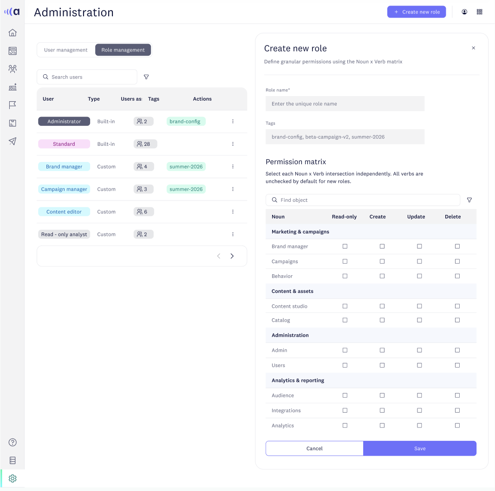
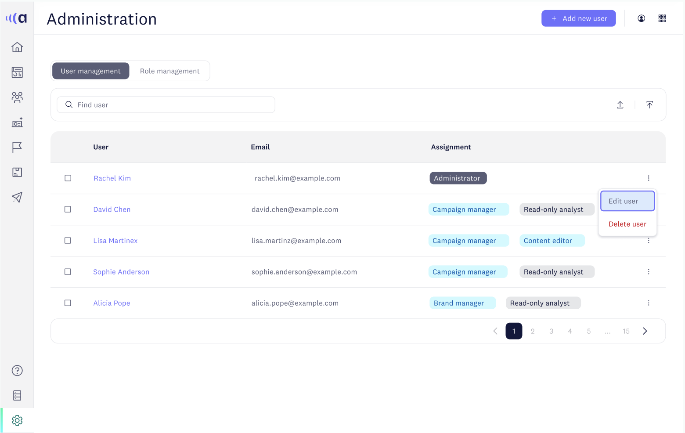
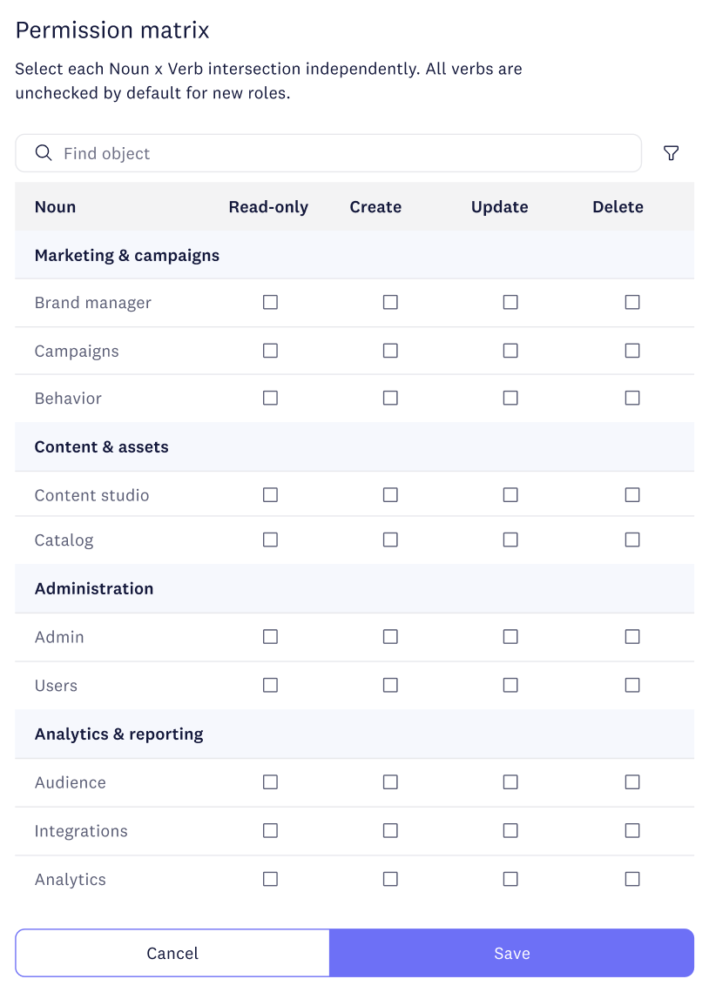
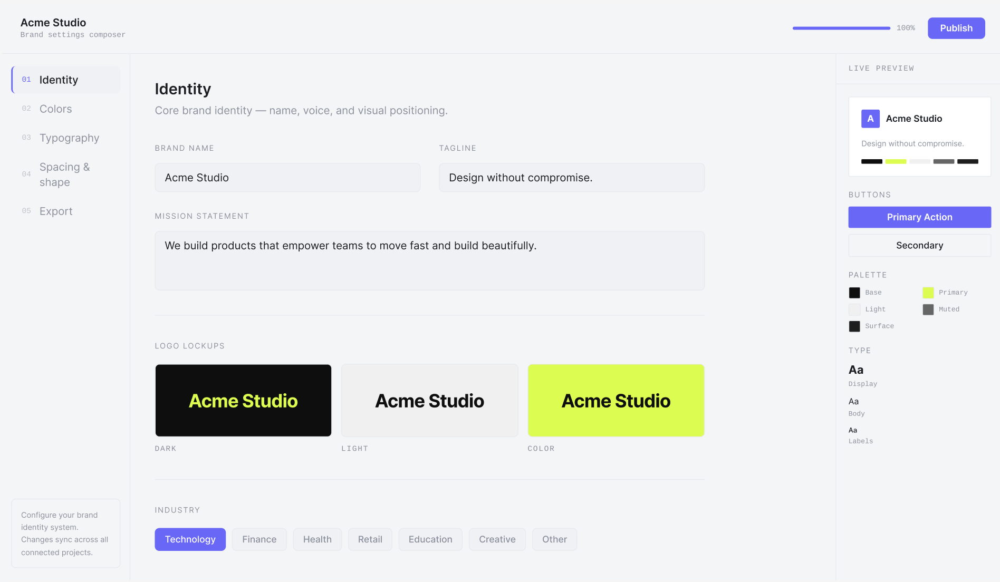

A complete administration suite that turned a high-risk churn threat into one of the product’s strongest enterprise capabilities.
A major enterprise customer was at risk of churning because Acoustic Connect lacked the user permission and brand customization controls their admins and marketers needed. I had 12 weeks to design a complete administration suite. or lose the account.
The result was a full redesign of the user management experience: a role-based permission matrix across four functional areas (Marketing & campaigns, Content & assets, Administration, Analytics & Reporting), a guided role creation and editing flow, three onboarding paths for bringing teams in, and a brand settings composer scoped to role-based access.
What started as a retention problem became one of the product’s most capable enterprise features.

Role composer with live permission matrix


User management · Full permission matrix

Brand settings composer. colors, typography, logo governed by the same role system
Enterprise-grade control that didn’t exist yet. with a deadline that wasn’t moving
Enterprise customers operate under strict access control requirements. Teams need to define exactly who can read, create, update, or delete within each area of the product. and they need audit trails when something changes.
Acoustic Connect had basic user management: you could add users and assign broad roles. What it didn’t have was the granular, matrix-based permission system an enterprise security team would accept. When the at-risk account flagged this as a deal-breaker, the design work landed on my desk.
A well-designed permission system has to:
- Be comprehensive enough to satisfy a security admin with strict compliance requirements
- Be legible enough for an IT generalist who doesn’t use the product daily
- Show the downstream consequences of any permission change before it’s applied
- Scale to an organization with dozens of users across multiple roles
- Include a path for bulk user import. a hard requirement for any enterprise rollout
Compose control, don’t configure it
The insight that shaped the entire design direction: the people configuring permissions are not the same people who use the product every day. An IT admin setting up roles for a marketing organization needs a different mental model than a campaign manager adjusting their own access.
The design opportunity was to create a permission system that communicated consequence. Not just “check this box to allow Create” but “here is what a Campaign Manager can and cannot do across every area of the product.”
The goal became to make enterprise-grade access control feel like a visual configuration tool, not a spreadsheet of toggles.
Four surfaces, one coherent system
User Management + Role Management + Permission Matrix + Brand Settings
User management
The home view for administrators: a table of all users, assigned roles, and quick access to edit or remove. Default state is a full user list with role assignment, search, and inline actions, plus empty states for guided onboarding and CSV or SSO import.
Role management
A bird’s-eye view of every role in the organization: who holds it, what it unlocks, and whether it is a standard or custom role. Creating or editing a role opens a side-in panel that keeps the role list visible.
Permission matrix
A structured grid that maps every functional area against four access levels: Read, Create, Update, Delete. The same matrix is used to review a role and to compose a new one.
Brand settings composer
An extension of the same permission framework. Organizations can control who changes the visual identity of the product, answering the enterprise question about white-labeling.
Permission matrix
Enterprise security teams could evaluate a role’s full access footprint without digging through individual settings. Visibility at a glance was the core mental model.
Composable roles
Reduced the number of custom roles organizations needed to create and maintain by letting admins build from clear functional areas.
Brand settings composer
Brand token control. colors, typography, logo. scoped to roles. Admins can lock brand settings to specific roles, enabling white-label environments for client-facing teams.
Three onboarding paths
Add manually, import from CSV, or sync from SSO. The empty state guides administrators to the right path for their organization size and IT setup.
Instead of: Basic user roles → no permission granularity → enterprise requirement unmet → churn risk
Desired experience: Role composer → permission matrix → brand control → enterprise requirement met → account renewed
Within six months of launch, three additional enterprise customers cited advanced permissions as a key reason for choosing Acoustic over competitors.
Churn prevented. A new enterprise capability shipped.
The at-risk account renewed. The permissions suite shipped within the 12-week window and immediately became a pillar of Acoustic’s enterprise sales story. A feature that hadn’t existed became something sales teams could demo with confidence.
The permission matrix concept. making the full access footprint of a role visible at a glance. was a decision made on day two. It shaped every screen that followed. Getting the mental model right early is worth more than any amount of polish added late.